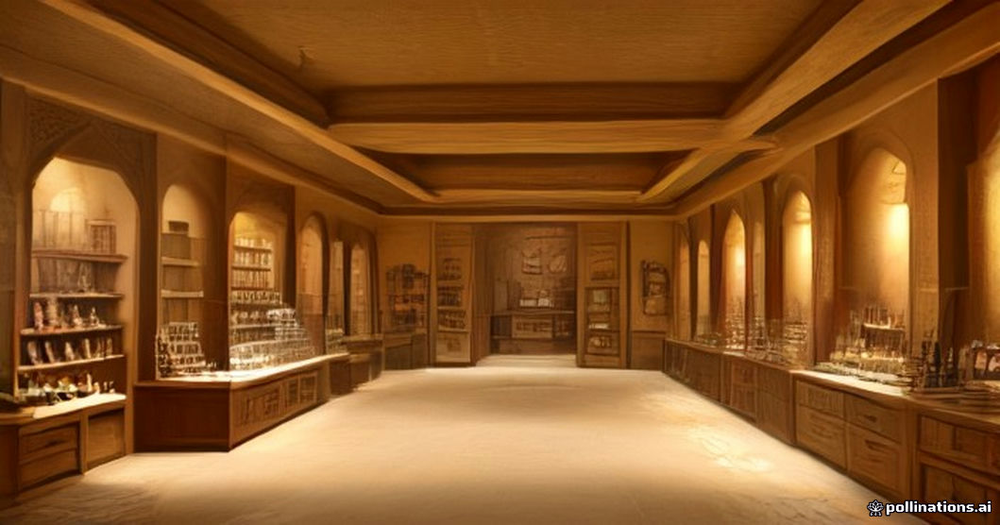

If you drive the main route from Errachidia down toward the Erg Chebbi dunes, you will pass dozens of roadside showrooms and workshops centered around the town of Erfoud. This region sits atop ancient Devonian seabed layers, making it one of the world's most active commercial centers for marble and fossil extraction. For travelers on a Fes to Merzouga road trip, stopping at one of these sprawling warehouses is practically a standard itinerary feature.
However, buying fossils in Morocco requires a bit of local context. The gleaming black tabletops studded with orthoceras and ammonites are rarely single, pristine slabs pulled straight from the earth. Understanding the difference between a natural specimen, a composite piece, and a completely fabricated decorative item will save you from overpaying and help you manage your luggage limits and carrying souvenirs on a 4x4 tour.
Understanding Erfoud Fossil Shops and Workshops
The operations around Erfoud range from massive cooperative showrooms employing local stonecutters to small roadside stalls selling inexpensive trilobites. Inside the larger workshops, blocks of limestone are sliced open using industrial diamond saws to reveal marine fossils embedded in the dark matrix. Workers then polish the limestone surfaces to create heavy household items like sinks, tables, and tiles.
When you browse these showrooms, you will notice that quality varies dramatically. Some items are purely decorative objects made by grinding down stone and mixing in resin, while others are authentic geological specimens carefully extracted from the surrounding desert strata.
- Showrooms employ local artisans for cutting, polishing, and inlay work.
- Raw blocks come from small-scale private quarries across the Tafilalt region.
- Prices reflect the hours of manual labor required to shape and polish the heavy stone.
Genuine vs. Assembled: What Is Actually Real?
A common misconception among travelers visiting Erfoud fossil shops is that every fossilized creature was found intact as a single 3D sculpture. In reality, most multi-fossil plates—especially the dense slabs showing dozens of ammonites and orthoceras—are assemblages. Artisans take individual fossilized shells, arrange them artistically onto a limestone base, and fill the gaps with a matching dark matrix and resin mixture.
Single-specimen trilobites and larger fish fossils also require careful inspection. Because fragile exoskeletons break during extraction, many trilobites are painstakingly hand-cleared under microscopes, while others have broken segments glued back together or are enhanced with carving tools to improve their appearance.
- Look for hairline cracks under bright light to spot repaired sections.
- Examine the matrix surrounding the fossil for resin pooling or color touch-ups.
- Ask staff directly if a piece is a composite or a single natural extraction.
Export Rules and Shipping Realities
Moroccan customs generally permit tourists to export common, commercial-grade fossils and mineral souvenirs purchased legally from shops and cooperatives. However, extremely rare vertebrate fossils—such as certain dinosaur bones or unique marine reptile skulls considered part of the national geological heritage—are subject to stricter ministerial oversight and export controls under Moroccan cultural property laws.
For standard decorative items, your main constraint will be weight rather than legality. A solid marble-and-fossil tabletop can easily weigh 20 to 50 kilograms, making commercial shipping or air cargo necessary. If you prefer not to carry heavy items through your entire itinerary, consider shipping rugs, pottery, and heavy souvenirs home directly through established local merchants who provide proper packaging and documentation.
- Standard ammonites and orthoceras plates are legal to pack in checked luggage.
- Rare scientific specimens require official export permits from the Ministry of Culture.
- Always request a formal receipt detailing your purchase for border inspections.
Practical Buying Tips for Travelers
Buying stone and fossils is an exercise in negotiation and practical logistics. Prices at roadside stops are rarely fixed, though large cooperatives with set price tags do exist. Do not feel pressured by high initial quotes; polite, calm bargaining is expected, but keep in mind that the heavy labor involved justifies a fair price for well-polished work.
Before making a purchase, factor in how the item will travel. If you are taking a multi-day desert circuit, carrying a heavy slab of stone in the back of a vehicle can be cumbersome. If you plan your purchases wisely, you can secure a genuine geological piece without complicating your return transit.
- Compare prices at a couple of different workshops before committing.
- Check your airline's baggage weight limits before buying large decorative pieces.
- Ensure fragile items are wrapped securely in bubble wrap and cardboard.
| Common Types | What to Look For | |
|---|---|---|
| Ammonite Plates | Dark limestone matrix with multiple embedded coiled cephalopods | Check if shells are naturally embedded or glued into a manufactured matrix. |
| Trilobites | Small marine arthropods carved out of surrounding rock | Inspect under magnification for sculpted resin details or glued segments. |
| Orthoceras | Straight-shelled squid ancestors sliced longitudinally in tabletops | Uniform polishing is normal; look for natural fossil variation within the stone. |
| Shark Teeth | Isolated fossilized teeth from phosphate mines in central Morocco | Very common and inexpensive; watch out for completely cast resin replicas. |

Illustration, not a photograph — for the real thing, you'll have to stand on the ridge yourself.
Quick answers
A few follow-up questions travelers ask about this.
Are the fossils in Erfoud real?
Yes, the raw materials are genuine fossils sourced from regional geological strata, but many decorative plates and slabs are composite pieces assembled by local artisans using real fossil fragments set in a stone-and-resin matrix.
Can I legally take fossils out of Morocco?
Standard commercial fossils like ammonites and orthoceras can be packed in tourist luggage without issue. However, rare vertebrate fossils and museum-quality specimens require official export permits.
Should I buy fossils on the way to Merzouga or on the way back?
It is usually best to buy on your return journey or ensure the shop can securely pack and hold your item, so you do not have to carry heavy stone slabs bouncing around in a vehicle throughout your desert tour.
Planning your own route?
Tell us your dates and what matters to you — we'll answer with a straight recommendation, not a brochure.
Send an inquiry See the itineraries